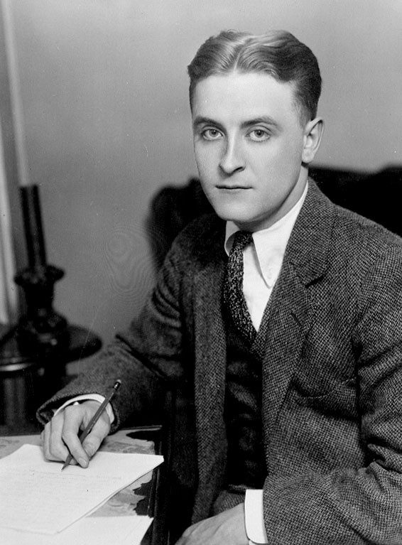

读之前
这一页是回忆录第四部分 The Alchemy of Writing 的四章，从 1961 年初电视版播出写起，讲长篇是怎么一步步写出来的。第 15 章讲作者为什么放下手上的小说、去扩写 Algernon；第 16、17 章讲扩写怎么做、书稿交出去以后的事，中间穿插电影改编那边的来往；第 18 章接着讲书稿。读的时候抓两条线：作者把自己的哪些记忆交给了查理；别人一次次要他改，他听了哪些、没听哪些。
1961 年初，三十三岁。在纽约一所高中教英文，晚上写作，住在 Coney Island 西头的 Seagate，妻子 Aurea 是时装摄影师，女儿 Hillary 一岁多。中篇 1959 年 4 月登上《奇幻与科幻杂志》，1960 年得了雨果奖。在那之前，Galaxy 的编辑 H. L. Gold 要他把结局改成查理保住智力、娶 Alice，他没改；登出来之前还按另一位编辑的要求删了一万词。
读的时候带着这几个问题。不用先找答案，读完回来对照「检查一下理解」。
作者说他从此不再解释自己的作品。留意他给这条规矩划的边界：什么不讲，什么还讲。§2
小说里哪些场面来自作者自己的经历？读的时候记下来，读完对照「对照小说」。§5–§7 §9 §15
每次有人要他改，他怎么回应？留意他接受了谁的意见、拒绝了谁的，理由是什么。§8 §11 §16
「曲线」这个词在第 17、18 章出现了好几次。留意每次指的是什么。§9 §15
分节地图
这一页四章，原书在章内用空行分成 16 节。读完一节打个勾；每节下面的英文是那一节开头的几个词，在 Kindle 里搜它就能跳过去。没读的那几行先模糊着，免得提前看到内容，点一下就能看清。全页约 7700 词，分两次读。
第一次坐下§1–§8 · 约 3700 词 · 第 15、16 章：从电视版到扩写，再到书稿交出去
第 15 章 Transformations: From Story to Teleplay to Novel约 400 词 SHORTLY AFTER “FLOWERS FOR ALGERNON” won … 电视版播出的那一晚。留意作者为什么把 1961 年的稿费一笔笔列出来。 第 15 章（续）约 200 词 One afternoon, while I was on … 火车上的一段对话。留意同事最后那句话的语气。 第 15 章（续）约 800 词 While all this was going on, … 两部小说抢他的时间。留意查理是怎样「缠上」他的，和他给自己算的那笔账。 第 15 章（续）约 200 词 As I struggled with the decision, … 一段莎士比亚和一次出发。留意他出隧道时喊的那句话。 第 16 章 Rejected Again约 800 词 FOR THE NEXT TWO YEARS, while … 扩写从哪里下手。留意他说把真实记忆交给人物时会丢掉什么。 第 16 章（续）约 500 词 Earlier—I must have been eight or … 留意他怎样把几段记忆拼成一个场面，拼完以后发生了什么。 第 16 章（续）约 500 词 Since I’d never seen a state … 一次参观。留意哪些人和画面后来原样进了小说。 第 16 章（续）约 300 词 Development of the novel didn’t go … 书稿交出去了。留意编辑的意见一条条是什么，作者怎样概括它们。 第二次坐下§9–§16 · 约 4000 词 · 第 17、18 章：重写，电影那边的来往，书稿的下落
第 17 章 Of Love and Endings约 500 词 UP TO THAT POINT in the … 第二条曲线。留意他从自己的哪段经历里取了情绪。 第 17 章（续）约 100 词 Meanwhile, Cliff Robertson, who was trying … 只有三段，在机场的一顿饭。留意作者问 Robertson 的问题。 第 17 章（续）约 400 词 He and the scriptwriter had wanted … Robertson 讲的故事，和他接着提的建议。留意作者两次「坐着不动」。 第 17 章（续）约 200 词 Four months later, on June 5, … 一封信。留意作者为什么不肯走另一条路。 第 17 章（续）约 300 词 On the same day, I received … 一封电报和一封回信。留意电报里提到的第二个人。 第 17 章（续）约 700 词 FADE IN: was followed by a … 一份剧本。留意它的开头、它的结构和最后三页，再看多年后作者读到的一本书。 第 18 章 We Find a Home约 800 词 STILL NUMB FROM THE EDITOR’S SECOND … 同事的一句话。留意第二天早上作者脑子里冒出来的词，和他写出来的那场戏。 第 18 章（续）约 1000 词 Two other major publishers rejected the … 又是几封信。留意作者在街上那一刻想的是什么。
背景：书里默认你知道的事
按在书里出现的顺序排，标题前是节号。作者和这些人之间的事，都是作者自己的说法。
§1 The U.S. Steel Hour：每周一部的电视剧1950 年代到 60 年代初，美国电视有一类「选集剧」（anthology drama）：每周换一个故事、一班演员，一集一小时左右，由大公司赞助冠名，不少是现场演、现场播。The U.S. Steel Hour 由美国钢铁公司赞助，纽约的剧团 Theatre Guild（书里写作 Theater Guild）制作，1953 年开播。1961 年 2 月 22 日它在 CBS 播出了 The Two Worlds of Charlie Gordon，编剧 James Yaffe（书里拼作 Yaffee），Cliff Robertson 演查理。
§1 Cliff Robertson
Cliff Robertson（1923–2011） 美国演员 电视版的查理。他对记者说，自己在电视上演红过两个角色，拍成电影时主角却分别给了 Jack Lemmon 和 Paul Newman，所以这次要自己买下电影改编权。1968 年的电影 Charly 让他得了奥斯卡最佳男主角。
§1 选择权、预付金、讲师合同这一页的几笔钱都和合同有关。电影选择权（option）：制片方先付一笔小钱，买下一段时间里独家改编的权利，到期没拍成，权利回到作者手里。预付金（advance，§3）：出版社凭写作计划先付一部分稿酬，书出版后从版税里扣；作者这份合同还写明，交不出能用的稿子要全数退还。英文作家的经纪人一般抽一成，作者列的 1961 年收入就是扣掉这一成以后的数。讲师（lecturer，§3）是大学里按合同聘的教职，和中学教师的终身职位（tenure）比，保障少得多。
§3 Wayne State 大学底特律的一所公立大学。作者 1962 年前后去那里教文学和创意写作，到 1966 年转去俄亥俄大学（「开读之前」讲过）。长篇的大部分是在底特律这几年写的。从纽约开车过去，要先穿过哈德逊河底下的 Lincoln Tunnel 进新泽西，再一路往西。
Wayne State 大学的 Old Main 楼，2021 年 12 月拍。作者在哪栋楼里上课，书里没说。Michael Barera，CC BY-SA 4.0，维基共享资源
§4 「人事有潮汐」作者引的这段出自莎士比亚《裘力斯·凯撒》第四幕第三场。说话的是 Brutus，他劝 Cassius 趁形势有利马上出兵：人的事情像潮水，涨潮时乘势而上就能成事，错过了，一辈子就困在浅滩和苦难里。英语里常有人借它说「机会来了要抓住」。剧里 Brutus 这一仗后来打输了，作者引的时候没提这一层。
§6 Fitzgerald 的三篇自述F. Scott Fitzgerald（1896–1940），《了不起的盖茨比》的作者。1936 年 2 到 4 月，他在 Esquire 杂志上接连发了三篇自述：The Crack-Up、Pasting It Together、Handle with Care，写自己精神和写作上的崩溃；1945 年 Edmund Wilson 把它们编进同名文集。作者记不准是哪一篇（他说「我想是叫 Handle with Care」），他转述的「空枪」「透支了感情的户头」，讲的就是这组文章里那种被掏空的感觉。

Fitzgerald 约 1921 年的宣传照，刊在当年 6 月的 The World's Work 杂志上，比那三篇自述早十五年。摄影者不详，公有领域，维基共享资源 §15 Sherwood AndersonSherwood Anderson（1876–1941），美国小说家，最有名的是短篇集《小城畸人》（Winesburg, Ohio，1919）。作者引的那两句出自他死后出版的回忆录，说自己的小说几乎没有一篇不是写了又写，有的短篇花了十年、十二年才写成。作者说他常拿这段给不肯改稿的学生看。
词与短语
两类：黄边的「每个字都认识」是熟词生义、习语、行话和话里的弦外之音；其余是这里用法特别的词。斜体小字是原句里的几个词，在 Kindle 里搜它就能找到原文。
§1 第 15 章
teleplay
… the Theater Guild’s U.S. Steel Hour teleplay.
电视剧（的剧本）
tele（电视）加 play（戏），为电视写、在电视上演的一部戏。章名里的 From Story to Teleplay to Novel 就是「从中篇到电视剧到长篇」。
Washington’s birthday
… on the evening of Washington’s birthday …
华盛顿诞辰（2 月 22 日）
美国的联邦假日。1971 年起改到 2 月的第三个星期一，民间多叫 Presidents’ Day。1961 年还是 2 月 22 日这一天。
rave reviews
… surprised at the rave reviews the next day …
一片叫好的评论
rave 本义是胡言乱语、狂喊，作形容词放在 review 前面是「捧上天的」。
always a bridesmaid but never a bride
… always a bridesmaid but never a bride …
总当伴娘，当不上新娘：每次都差一步
英语老话，1920 年代一则漱口水广告让它流行起来（广告里是 often a bridesmaid）。Robertson 拿它说自己：电视版演红了，电影的主角却轮不到他。
close the deal
… Robertson and I closed the deal.
谈成，签下合同
close 在这里是「了结、敲定」，不是「关掉」。生意场上的常用说法。
put things into perspective
… let me put things into perspective by …
把事情摆回它本来的大小；说句实在的
perspective 是透视、比例。前半句说别以为这是中了彩票，接下来就把一年的稿费一笔笔列出来。
option
… Movie option from Robertson Associates …
（电影改编的）选择权
见「背景」。作者这一年最大的一笔收入就是它，900 美元。
teaching high school days
… continue teaching high school days to support …
白天在高中教书
days、nights 不带介词作副词，是「白天」「晚上」（常常是天天如此）。同一句后面还有 while I wrote nights。
§2 第 15 章（续）
pontificate
I pontificated on the levels of meanings …
摆出权威的架子大发议论
从 pontiff（教皇）来，带点自嘲：他在火车上给同事大讲象征和层次。
branded
His words are branded somewhere in my …
烙（在心里）
brand 是给牲口打的烙印，也是「品牌」。这里是动词：那句话像烙铁一样留下了印子。
much less
… much less understand their own works …
更不用说
接在否定句后面，引出更进一步、更不可能的事：作家不知道自己在干什么，更别说懂自己的作品。不是「少得多」。
Never mind.
What do I mean? Never mind.
算了，别管了
他刚说完不解释，自己问了一句「我什么意思？」又马上收住。是这一节结尾的一个玩笑。
§3 第 15 章（续）
crowd in on
… it crowds in on me during non-writing hours …
挤进来，缠着（人）
crowd 是挤。不写的时候，故事也挤进他脑子里，他在心里构思、改句子。
become wise to
I had already become wise to the tricks …
看穿，识破
be wise to something 不是「对……很聪明」，是「已经知道它的把戏」。
dormant in my root cellar
… dormant in my root cellar?
在我的地窖里休眠
root cellar 是储存土豆、萝卜这类根茎菜的地窖；dormant 是种子、球根的休眠。接着说要 replant（重新种下）才知道死没死。回忆录第 1 章叫 My Writing Cellar，地窖是他给写作打的比方。
let up
… but he wouldn’t let up.
停下，松手
he 是查理：作者想躲开他，他不肯罢休。
advance
… a book contract with an advance of $650.
预付金
见「背景」。advance 作名词还有「进展」「借款」的意思，出版合同里就是先付的稿酬。
tenure
… my regular New York teaching license and tenure …
终身职位
教师通过试用期后得到的保障，没有正当理由不能被解聘。去大学当合同讲师，就得放弃它。
lectureship
… offered me a four-year lectureship …
讲师职位
后面两个词说明这份合同：nonrenewable（不能续约），nontenurable（不能转成终身职位）。四年一到就得走。
§4 第 15 章（续）
There is a tide in the affairs of men
There is a tide in the affairs …
人间的事有潮涨潮落
《裘力斯·凯撒》里 Brutus 的话，见「背景」。affairs of men 是「人世间的事」。
flesh out
… it shouldn’t take long to flesh out …
充实，补上血肉
flesh 是肉。给骨架添上肉：中篇有了故事的骨架，扩写就是往上填细节。他以为这花不了多久。
grubstake
… a grubstake from the movie option …
起步的本钱
原是淘金年代的说法：有人给探矿的人提供口粮（grub）和装备，换他找到矿以后分一份（stake）。
Westward Ho
“Westward Ho, Charlie!” I called out.
向西去！
19 世纪美国人往西部拓荒时的口号。m3 里《纽约时报》那位 Ochs 先生对少年作者说的是 Greeley 那句「Go west, young man」，作者在隧道里想起了他。他喊的是查理。
… or bust
It’s Flowers for Algernon or bust!
不成功，就完蛋
bust 是破产、垮掉。1859 年科罗拉多淘金热，往西去的篷车上写着 Pikes Peak or Bust（不到派克峰就完蛋），后来成了句式。
§5 第 16 章
tamper with
… people would resent my tampering with it.
乱动，篡改
带贬义，用在不该动的东西上（tamper with evidence）。他怕喜欢中篇的读者觉得他在糟蹋原作。
clubfoot
… the real Gimpy, with his clubfoot …
马蹄内翻足，畸形足
一种先天的脚部畸形，走路会跛。Gimpy 这个外号就是从 gimp（瘸子，不客气的叫法）来的。
facilitate
Since emotions facilitate the transfer of scenes …
促进，帮着（完成）
学术腔的词。他说情绪帮着把场面送进长期记忆。这句话今天站不站得住，见读后的「对照今天」。
§6 第 16 章（续）
have a crush on
… all the boys had a crush on.
迷上，暗恋
crush 本义是压碎。多用于少年人一时的迷恋。
coy
She was pretty and coy …
故作害羞的，忸怩的
带一点「装出来的羞」，后面紧跟着 she teased us（爱逗我们）。
overdraw one’s account
… having overdrawn his emotional bank account.
透支（感情的户头）
overdraw 是取的钱比存的多。下一段作者接着用这个比方：只要还在写、还在经历，就在给记忆的户头 restock（补货）。
§7 第 16 章（续）
developmentally challenged
… now referred to as the developmentally challenged …
（委婉说法）发育障碍者
作者 2004 年写书时的「现在的说法」。challenged 这类词是为了避开旧称，也有人嫌它太绕。美国 2010 年的法律（Rosa’s Law）把联邦文件里的 mental retardation 改成了 intellectual disability（智力障碍）。
deaf mutes
… the woodworking class of deaf mutes …
聋哑人（旧称）
今天英语里不这样说，mute 暗示「不会表达」，多直接说 deaf。小说里查理也用这个旧词。
cradle
… one of the bigger boys cradling an older …
（像抱婴儿一样）抱在怀里
cradle 本义是摇篮，作动词是轻轻抱着、托着。
§8 第 16 章（续）
make one’s deadline
Yet, I made my deadline …
赶上截稿日期
make 在这里是「赶上、做到」，和 make the train（赶上火车）一样。
suffer from expansion
He felt the book suffered from expansion.
（书）因为扩写而受了伤
suffer from 常接病名。编辑的意思是：扩写把一篇好中篇拖垮了。
formula love triangle
… a formula love triangle superimposed on …
套路化的三角恋
formula 作形容词是「照公式写的」，formula fiction 就是类型套路小说。superimposed 是硬叠上去的。
most cutting of all
And, most cutting of all …
最伤人的是
cutting 是「刻薄伤人的」，又是「删减」：编辑最后一条意见就是要大删。作者自己在括号里注了「双关是故意的」，下一句的「似曾相识」指的是当年为了发表删掉一万词。
pick one’s emotions up off the floor
I picked my emotions up off the floor …
把摔了一地的情绪捡起来
从 pick yourself up off the floor（被打倒后爬起来）改出来的，后面还跟着「擦掉心上的血」。
§9 第 17 章
throw oneself into
… by throwing myself back into the work …
一头扎进（工作）
不是「扔」。back 表示重新回去。
prefabricate
Instead of prefabricating a formula love triangle …
（像预制件一样）事先造好
prefab house 是工厂预制、现场拼装的房子。和后半句的 letting it grow out of the story（让它从故事里长出来）对着说。
§10 第 17 章（续）
get under way
… trying to get the movie version under way …
启动，开拍
under way 原是船起锚开动。
downbeat ending
… seeing a downbeat ending before this.
低沉的、不圆满的结局
downbeat 本是音乐里小节的第一拍（指挥的手往下打），引申为「沮丧的」。反义词 upbeat，下一节 Robertson 说的 upturn、upbeat ending 都是往上扬。
§11 第 17 章（续）
fit the mold
… the downbeat ending didn’t fit the mold …
合乎（固定的）套路
mold 是浇铸用的模子。赞助商的一小时电视剧有它的模子：结尾要让人舒服。
register surprise
… register surprise, then excitement …
（表演时）露出惊讶的表情
register 在表演里是「把情绪显在脸上」，不是「登记」。
live television
… was live television, Dan.
现场直播的电视
live 读 /laɪv/，作形容词。现场演、现场播，演员不照剧本做，导演也来不及拦。这是 Robertson 的说法。
here we go again
… I thought, here we go again.
又来了
碰到同一件烦心事第二次（第三次）时说。前一次是 m5 里 Galaxy 的编辑要他改结局。
toss down one’s napkin
… I said, tossing down my napkin.
把餐巾往桌上一摔
饭不吃了、话不谈了的动作。
leave me out of it
… but leave me out of it.
别把我扯进去
他不管电影怎么改，只是不肯沾手。
§12 第 17 章（续）
paperback original
… selling it as a paperback original.
（不出精装）直接出平装本
当时严肃小说先出精装（hardcover trade edition），书评界才当回事；直接出平装的多是类型小说。所以作者不肯。
go that route
… into it to go that route.
走那条路
route 这里是「做法」。美国口语常省掉 by：go that route。
§13 第 17 章（续）
wire
… I received a wire from Cliff Robertson …
电报
wire 本义是电线，旧时口语里指电报（telegram）。
§14 第 17 章（续）
FADE IN
FADE IN: was followed by a …
淡入
电影剧本开头的固定写法：画面从黑里慢慢亮起来。结尾的 fades out 是淡出。
two-humped camel
It had the shape of a two-humped camel.
双峰驼
他用骆驼背打比方说剧本的结构：故事里只有一次起落，这份剧本有两次。
odds on
… odds on, my screenplay stunk.
十有八九
odds-on 原是赌马的说法：赔率低于一赔一，几乎稳赢。stink 的过去式 stunk 在口语里是「糟透了」。
A-list
… one of Hollywood’s A-list screenwriters …
一线的，顶尖的
好莱坞按身价给演员、编剧排的名单，A 是最上面一档。
§15 第 18 章
double-edged
I winced at the double-edged comment.
两面刃的（话）
前半句夸（书很有力量），后半句挑毛病（少了点什么），两边都割人。
stew over
… I stewed over it.
翻来覆去地想，闷着发愁
stew 是文火慢炖。
E.Q.
… now sometimes called the E.Q.
情商
作者拿 I.Q.（智商）打头：情绪的那条曲线「现在有时叫 E.Q.」，灵性的那条「也许将来会叫 S.Q.」。这些说法在心理学里站不站得住，见读后的「对照今天」。
break from psychoanalysis
… including my own break from psychoanalysis …
和精神分析的决裂
break 作名词，这里是「断绝、离开」。他年轻时做过精神分析，回忆录第 10 章讲过他是怎么停下来的。
§16 第 18 章（续）
tour de force
… clearly that of a tour de force …
炫技之作
法语，「力的一圈」，指靠高难度技巧撑起来的作品。这位编辑的意思是：只有一个人物、只有一条走向，要写好得靠惊人的手艺。
bring off
… has quite managed to bring off.
（把难事）做成
not quite managed to bring off 是「没能完全做成」，退稿信的客气说法。
near-miss
… it is a near-miss for us …
差一点就要了
本义是炸弹、子弹「差一点打中」，也指差一点撞上的险情。这里是遗憾：只差一点。
publish or perish
… had become publish or perish.
不发表就出局
美国大学里的老话：教员不出成果就留不住。作者在大学教写作，出一本书顶得上一篇博士论文，没有书就得回去读博士。
write for the drawer
Although I hadn’t written “for the drawer” …
写了锁进抽屉，不拿去发表
他举的是诗人 Emily Dickinson（书里拼作 Dickenson）：她生前只发表过十来首诗，大量诗稿在她死后才被发现、出版。
something of an obstacle
… are something of an obstacle partly …
有点儿碍事
something of a … 是「算得上……、有几分……」，口气比直说 an obstacle 轻。
go against the grain
… anything that goes against the grain.
违背（你的）本意
grain 是木头的纹理，逆着纹理刨就不顺。
对照小说
作者在这四章里讲了小说好几段是从哪里来的。一张卡片一件事：回忆录里怎么说，小说里落在哪一页；点链接回到那一页。右上角是回忆录这一页的节号。
从纸盒厂到面包店 作者嫌中篇里的纸盒厂（他少年时打过工的地方）太平淡，翻出早年写的面包店素描，把查理的活儿换了。m2 里讲过他十四岁在面包店做工。跛脚、鞋缝和头发里全是面粉的 Gimpy，也有一个真人。
报告 1 · 3 月 3 日起 §5 情人节的挂坠 查理把心形挂坠送给 Harriet、挨她两个哥哥打、转学，是作者拼起来的：他被一群大孩子围打过；八九岁时也把挂坠挂在一个女孩门上，第二天被叫进校长室；再加一个在店门口转纽扣绳的男孩。回忆录说挂在门外，小说里是门里。
报告 9 · 4 月 17 日 §5 去 Warren 看看 报告 15 末查理说要先去看看 Warren，作者说这个念头是写出那句话以后才有的。他写信给几家州立机构，去待了一天：脸上有胎记的护士、木工课上听不见的男孩、抱着大孩子的男孩，都进了 7 月 14 日那一条。
报告 16 · 7 月 14 日 §7 第二条曲线 编辑要查理和 Burt 争 Alice，作者不肯，改成一条跟在智力后面的感情曲线。5 月 10 日 Alice 说他感情上也在变的那场是这时新写的。作者说，被退稿的灰心变成了查理被拒绝的心情。
报告 11 · 5 月 10 日 §9 第三条曲线 同事说「少了点什么」，作者想到灵性的曲线，放在查理知道结局之后：10 月 4 日那次治疗里的光、往上飘、曼陀罗、柏拉图洞穴那句话。他说借了自己做精神分析的经历，但那些画面是查理的。
报告 17 · 10 月 4 日 §15 Warren 挪回原处 最后一位编辑嫌手术前后那几篇读着吃力，请他把 38 页删到 28 页左右；又建议把参观 Warren 放到查理问能不能去看看之后。作者一翻稿子，那正是他最早写的位置。
报告 15 · 7 月 12 日 §16
作者说的三条曲线
智力（中篇就有）
情绪（第一次退稿后）
灵性（「少了点什么」之后）
3 月 4 月 5 月
6 月 7 月 8 月
9 月 10 月 11 月
10 月 4 日 治疗里的幻象
本站示意图，按作者在第 17、18 章的说法画，不是测出来的数：中篇只有智力一条曲线；第一次退稿后加了情绪的曲线，比智力慢一拍；同事说「少了点什么」以后，又加了灵性的曲线，放在查理知道结局之后。 值得停下来的句子
Ever since the writing, those memories and emotions have belonged to Charlie. They’re no longer mine.— §6，第 16 章，作者把挨打和挂坠两段记忆写进小说以后。本站译：自从写下来，那些记忆和情绪就归了查理，不再是我的了。
前一句他说，写那场戏的时候，害怕、疼、难堪一点点流走了。这句话用的是现在完成时 have belonged：从写下的那一刻起一直归查理，到写回忆录时还是。这一章他说了两遍「不再是我的」，另一遍在 Warren 那一段的末尾，两处的说法几乎一样。读小说时觉得挨打那一段格外疼的读者，可以想想：那份疼原来是谁的。
As I had believed I was near death, I had met myself and discovered I could now call myself a novelist.— §16，第 18 章，在街上晕倒、醒来以后。本站译：我以为自己快死了，在那一刻见到了自己，发现我现在可以称自己是小说家了。
他晕倒前最后一句话是「感谢上帝，我把小说写完了」，他说自己惭愧，那一刻想的不是妻子和孩子。这句把「小说家」定义成写完书的人，不是出了书的人：说这话时，他的书稿已经被退了好几次，还没有人要。
读完想一想
1. 作者说，把自己的记忆写给查理，那段情绪就不再是他的了（§6）。他又引 Fitzgerald 的担心：作家把自己一块块给出去，最后会被掏空。这对写作的人是代价还是好处？你讲过、写过自己的某段经历以后，有没有类似的感觉？
本站的看法 本站的看法：作者自己两样都说了。挨打的害怕和恨跟了他很多年，写完就淡了，这听上去像解脱；可他也承认被 Fitzgerald 那个想法困扰过。他给自己的答案是：只要还在写、还肯去经历新的事，户头就能补上，Warren 那一天就是一次补货。所以在他这里，给出去和补回来是同一件事的两面。读者不必同意，有些经历讲一百遍也不会变轻。
2. 第一位编辑要三角恋、要查理和教授们正面对决，Robertson 要老鼠活下来，作者都拒绝了；同事一句「少了点什么」、最后那位编辑删十页、挪 Warren 的建议，他都接受了。他是凭什么分的？
本站的看法 本站的看法：他在 §8 末尾给过一条标准：只改查理和故事本身要求的。被拒绝的那几条都是从外面套进来的东西：市场要的结局、类型小说的套路。被接受的那几条都是在故事自己的方向上推一把，同事没开药方，只说缺了什么，最后那位编辑还说一切只是建议。也可以注意到，被接受的意见来得都比较晚，作者那时已经守住了结局，才更放得开手去改别的。
3. 作者说他从此不解释自己的作品，意义是读者的事（§2）；可这四章讲了小说里好多场面从哪里来。读了这些来源，你对小说那几段的感觉变了吗？知道得多一点是好事吗？
本站的看法 本站的看法：他自己划了界：可以讲方法、来源和写的过程，不讲作品是什么意思（§2 末尾）。讲来源确实也会改变读法：知道 Harriet 那一段是作者自己挨过的打，那场戏就多了一层分量；也可能让人把查理读成作者的影子。本站在「对照小说」里只列了来源，没有说这些来源说明了什么，这一步留给读者。
对照今天
成立 后来的事实印证了这个说法部分成立 一部分对，一部分被后来的事改了被改写 后来的事实推翻了它，或者完全变了样书里的说法：情绪会帮着把场面和画面送进长期记忆（作者，§5）
书里 作者说，情绪帮着把场面和画面连同当时的感受一起送进长期记忆；他还发现，把这样的记忆写给小说人物以后，自己常常就丢了那份情绪。
当时 作者写回忆录的 2004 年，神经科学家 James McGaugh 在《神经科学年评》上发表综述，总结了几十年的动物和人体研究：情绪激动时释放的应激激素，通过杏仁核调节，让那段经历记得更牢。
今天 这个结论仍是主流：情绪激动的事比平淡的事记得牢，杏仁核起的是「调节」作用，记忆本身存在海马和皮层等别处。后来的综述还在补充具体的机制。作者的后半句（写进小说情绪就没了）是他自己的体会，本站没有找到直接检验它的研究。核对于 2026-10。依据：McGaugh 2004 年《神经科学年评》综述；LaLumiere、McGaugh、McIntyre 2017 年《药理学评论》综述。
书里的说法：智力之外，情绪也有自己的一条曲线，「现在有时叫 E.Q.」（作者，§15）
书里 作者说，中篇只追着查理的智力（I.Q.）那一条曲线；加了爱情，才有了情绪的曲线，「现在有时叫 E.Q.」；还缺的是灵性的曲线，「也许将来会叫 S.Q.」。
当时 他写长篇的 1960 年代还没有这个词。心理学家 Salovey 和 Mayer 1990 年提出「情绪智力」，1995 年 Goleman 的畅销书让 EQ 家喻户晓。S.Q. 也在 2000 年有人写成了书（Zohar 和 Marshall）。
今天 识别、理解、调节情绪的能力可以测，和智商、人格有重叠，又不完全是一回事，这一半站得住。可「EQ」没有像智商那样公认的一个分数；Joseph 和 Newman 2010 年的元分析发现，自评问卷测的「情商」很大一部分可以用人格特质解释，「情商比智商重要」这类说法证据不足。灵性智力，提出多元智能的 Gardner 考虑过，没有把它列为一种智力。核对于 2026-10。依据：Joseph 和 Newman 2010 年《应用心理学杂志》的元分析；Gardner 关于灵性智力和存在智力的论述。
检查一下理解
先在心里答，再点开。答错的那题，回书里把对应那一节再读一遍。
1.（§1）1961 年作者靠「Flowers for Algernon」挣了多少？他为什么要列出来？ 扣掉经纪人的一成，全年净收入 949.50 美元，最大的一笔是 Robertson 付的 900 元电影选择权。他列出来是为了让读者别以为得奖、卖电视版就像中了彩票：他还得白天在高中教书，晚上写。
2.（§3）作者为什么先扩写 Algernon，而不是写那部辐射小说？ 查理一直缠着他：童年、父母、妹妹的场面不断冒出来。他还想到一个写法上的难题：天才查理回头看手术前那些模糊的童年，会怎样记起来。他也以为扩写花不了多久，中篇得过雨果奖，能拿到出版社的预付金。
3.（§8）第一位编辑退稿时提了哪些意见？ 他说书扩写以后伤了原作，没有加进新东西；妹妹那几段和一些梦太强烈；要查理和教授们正面对决，再加一条眼下的情节线，比如查理和 Burt 都爱上 Alice；还要大删。作者概括说：这是要他整个重写，改成套路化的三角恋加正邪对决。
4.（§11）电视版的结尾原来要怎么改？为什么没改成？ 赞助方嫌结尾太低沉，折中的办法是：查理在 Algernon 坟前拿起那本已经读不懂的书，翻几页，脸上露出惊喜，嘴唇动起来，暗示智力在回来。Robertson 说那天是直播，他入戏太深，坐着一动不动，直到停播的灯亮了。
5.（§14）作者为什么不喜欢那份剧本？ 手术放在了剧本的一半；跟中篇贴得太紧，没给查理脑子里的事找到电影里的对等物；还让查理退化以后再做一次手术、再失败一次，成了「双峰驼」的结构；结尾 Algernon 没死，查理把它贴在脸上，笑着流泪。
6.（§16）最后那位编辑提了哪两条修改？作者怎么看？ 一条是把手术前后那几篇删短，38 页删到 28 页左右，作者说没问题；一条是把参观 Warren 提前，放在查理问能不能去看看之后。作者一翻稿子，发现那正是他最初写的位置，后来不知为什么挪走了。
用一句话说这一页：
精彩回顾
隔几周回来，先看这几张卡片。想不起来的那张，点节号回到这一页，再回书里那一节。
一句话： 作者用了几年把中篇写成长篇，把自己的记忆一段段交给查理，被退了一次又一次稿，也一次次拒绝改结局。
药杯里的香槟 电视版播出那晚，作者坐在住院的 Aurea 床边看，护士挤满了病房，看到他的名字就鼓掌。他偷带了一瓶香槟，倒在小小的塑料药杯里。
§1 「就这些吗？」 火车上，同事问小说里的意象，作者大讲象征和层次，同事听完说：哦，就这些？从那以后他不再解释自己的作品。
§2 隧道里的一声喊 旧车装满家当，开进 Lincoln Tunnel，作者喊：向西去，查理！不写成 Flowers for Algernon，就完蛋！
§4 坐着不动的查理 Robertson 说，直播那天他本该捧起书露出惊喜，暗示智力回来了。他入戏太深，一直坐着不动，直到停播的灯亮。
§11 双峰驼 剧本第一个镜头是手术室，病人原来是只白老鼠；最后三页 Algernon 活着，被查理贴在脸上。多年后作者才知道是谁写的。
§14 路灯下 书稿被一家家退回，作者在去学校的路上眼前一黑，以为自己要死了，脱口说：感谢上帝，我把小说写完了。
§16